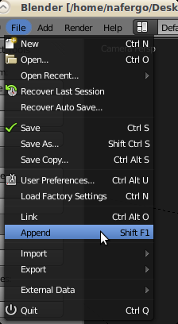
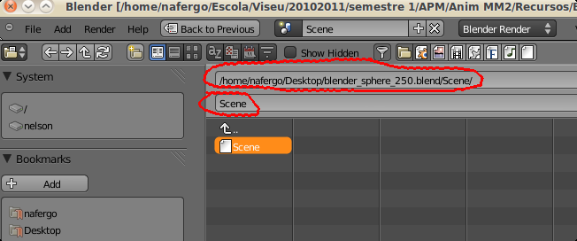
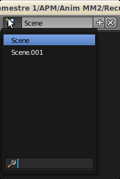
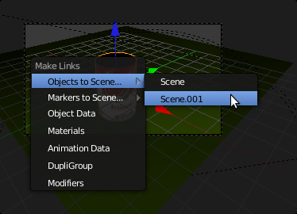
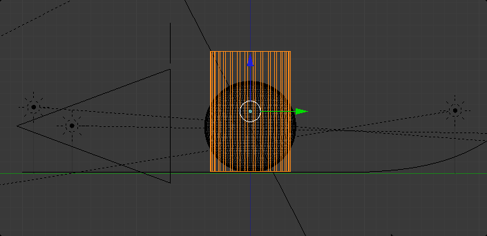
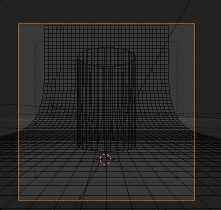
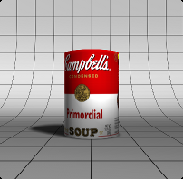

Descarregue aqui ficheiros de apoio a este texto.
Neste tutorial, vamos utilizar “light rigs” (configurações/set ups de iluminação) para o Blender Internal Render disponíveis online. Os procedimentos para “light rigs” para Cycles são similares.
0 - Comece por descompactar o ficheiro zip que acompanha este tutorial para poder aceder aos seguintes ficheiros:blender_sphere_250.blend e Manual-Lighting_250.blend.
1- Carregue um ficheiro .blend a seu gosto. No nosso caso, utilizámos a lata criada noutro texto.
2- Aceda ao menu File > Append e através da janela File Browser localize o ficheiro “blender_sphere_250.blend”. Quando clicar neste ficheiro, terá acesso às diferentes pastas onde são armazenadas as informações que constituem um ficheiro blend (i.e. Brush, Camera, Scene, Mesh, etc.).
Seleccione a pasta Scene. Dentro dessa pasta encontrará uma cena com o nome Scene. Seleccione a cena Scene e clique no botão “Link/Append from Library” (localizado no topo, lado direito).
3- Se aceder agora ao menu de Scenes (topo do ecrã), encontrará 2 cenas: Scene (é a cena pré-definida) e Scene.001 (a cena que acabou de importar. Neste menu, pode navegar entre as cenas existentes no ficheiro, renomear, criar novas e apagar cenas.
Se seleccionar a Scene.001 irão surgir todos os elementos importados do ficheiro “blender_sphere_250.blend” (i.e. Lâmpadas, objectos, materiais, câmara, etc.).
4- Na sua Scene, seleccione a “lata” e clique em CTRL+L para criar um link entre cenas. Na realidade, vai criar uma cópia linked do objecto “lata” entre cenas. Isto significa que o mesmo objecto vai surgir nas duas cenas. Ou seja, se modificar o objecto numa das cenas, a modificação será visível em todas as cenas.
5- Utilize o menu de Scenes para navegar até à Scene.001. Agora, para além de todos os objectos importados, existe uma cópia da sua “lata”. Redimensione (S) a sua “lata” e posicione-a de forma a ocupar o lugar da esfera. A sua lata deverá ficar com uma altura aproximada à da esfera (para poder utilizar o mesmo enquadramento).
6- E agora renderize...
 - Aproveite para ver que tipo de lâmpadas estão a ser utilizadas e respectivas configurações.
- Utilize o mesmo procedimento para importar e experimentar as light rigs disponíveis no ficheiro Manual-Lighting_250.blend
- Experimente importar "light rigs" para Cycles.